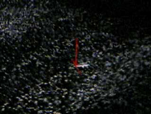

|  |
Beams of light, which detect the user's movements, make up the keyboard. It can be integrated into mobile phones, laptops, tablet PCs or even sterile medical environments. The gadget was unveiled by Siemens at the CeBIT computer fair in Hanover, Germany. Siemens Procurement Logistics Services say the keyboard, manufactured by Developer VKB Inc, in Israel, could represent a revolution for data entry and the mini computer. The mini projector that detects user interaction with the surface also simulates a mouse pad. |